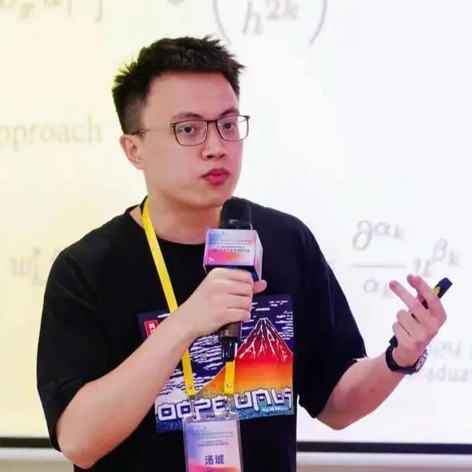

MATHEMATICS / QUANT / AI
Cheng TangJames Tang
计算数学博士 · 量化研究员
从数据中发现规律，用数学理解复杂系统。我的研究与实践连接科学计算、量化金融和人工智能。
AQUMON量化研究 & AI

02 / RESEARCH
我关注的问题
让数据、模型与领域知识相互连接。
精选论文
弱形式 · 稀疏回归 · 科学计算03 / JOURNEY
从学术到实践
跨越数学、数据科学与金融的学习和工作经历。
工作经历
教育经历
04 / TALKS & CONFERENCES
会议与学术交流
学术报告，以及作为香港浸会大学学生代表参与的交流活动。
学术交流照片
报告、会议与交流中的一些片段。
05 / SELECTED WORK
研究与项目
一些已经开展的探索，更多工作将在这里陆续分享。
探索仍在继续
这里会继续记录我的研究、工具与个人项目。
06 / CONTACT
让想法开始交流。
欢迎交流科学计算、量化研究、AI 和有趣的项目。